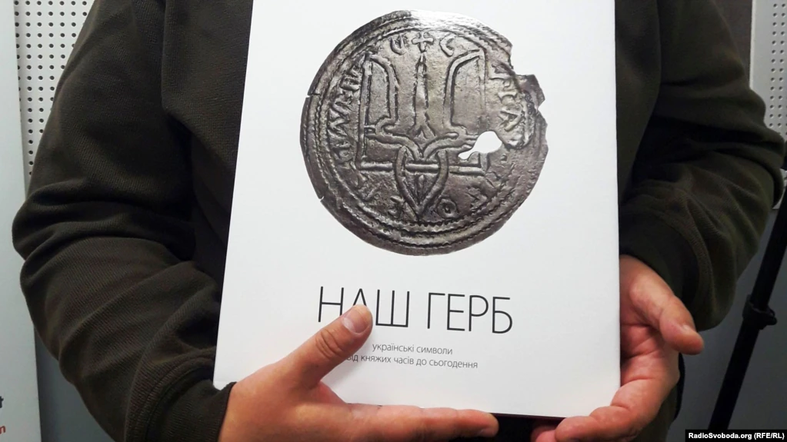

Київська Русь: утворення та основні етапи розвитку.

Як відомо, пращурами українців були слов’яни. Протягом VII-VIII ст. ці племена широко розселилися на
території Східної Європи: землі східних слов’ян простяглися від далекого озера Ільмень на півночі і майже до
Чорного моря на півдні
Літописець нараховує близько п’ятнадцяти східнослов’янських племінних об’єднань. Найбільшими з них були:
поляни, що жили на Середній Наддніпрянщині, сіверяни – на річці Десна, в’ятичі – на Оці, на заході від полян
– дреговичі і деревляни. По течії річки Західний Буг лежали землі волинян і дулібів.
На північному заході сусідами східних слов’ян були варяги (племена балтів і норманів), на сході й півдні –
кочові племена хозарів, печенігів, булгар, з якими у східних слов’ян часто виникали зіткнення за контроль
над річками, що слугували торговими шляхами до Візантії та країн Сходу. Саме з розвитком торгівлі зв’язував
початок держави відомий український історик М. Грушевський: торговельні каравани потребували збройної
охорони від напасників на суходільному шляху та на Дніпрі, а дати таку охорону могла тільки певна
організація.
Територія сучасної України протягом VII-VIII ст. була рідною землею для сімох східнослов’янських
племен:
- полян,
- деревлян,
- сіверян,
- волинян,
- білих хорватів,
- уличів,
- тиверців.
Перераховані в літописі племена являли собою територіально-політичні об’єднання – союзи племен. Ці союзи
племен літописець називає княжіннями.
На кінець XII ст. нові політичні центри посилились і відокремились настільки, що можна вести
мову
про
чотири групи земель, всередині яких існували особливо тісні економічні й політичні взаємини:
- Київська, Чернігівська і Сіверська;
- Галицька і Волинська;
- Новгородська, Псковська, Смоленська, Полоцька і Вітебська;
- Ростово-Суздальська, Рязанська, Устюзька, Муромська.
Вони були своєрідними зародками держав, в них лише складався примітивний апарат влади, а спадкоємна
знать, очолювана князем, ще не відокремилася в окрему соціальну групу.
Верховним органом племінного самоуправління княжінь слугувало віче. Подальший розвиток родоплемінної
організації обумовлював появу спочатку виборної, а пізніше спадкової князівської влади, що була вищим
виконавчим органом племінного управління.
У результаті постійної військової активності й зростання суспільно-політичного значення князівської влади
навколо князя збиралася й гартувалася дружина, основним заняттям якої була служба у князівському війську.
Це була постійна організація професійних воїнів, яка поступово перетворилась у самостійний атрибут влади.
Дружина була головним інструментом, за допомогою якого князь збирав данину, завойовував нові землі.
Найбільш знатні дружинники складають дорадчий орган при князеві – боярську раду.
Починається формування великих землевласників – бояр, які отримували землю (вотчину) за службу у князя.
Тепер земля могла передаватись у спадок. Основна ж частина селянства – смерди - платили князеві данину і
виконували різні повинності. Таким чином, наявне було соціальне розшарування. Але в цей період ще не було
держави як легалізованого апарату примусу.
Формування державності у східних слов’ян зумовлювалось низкою соціально-економічних і політичних
чинників.
Підвищення продуктивності праці, яке спричинило появу додаткового продукту, привело до різких змін у
соціальній сфері. Передусім зменшилася необхідність спільного обробітку землі. Земля стала переходити у
власність окремих сімей.
За соціальним розшаруванням іде кастова диференціація: землевласники перетворюються на феодалів, а вільні
общники - на феодальне залежне населення. Розвиток ремесла зумовив поглиблення розподілу праці, розширення
обміну всередині та між общинами, що в свою чергу викликало активізацію торгівлі та виникнення постійних
поселень. Пожвавилася й зовнішня торгівля. Особливо розвивались зв’язки з Великою Моравією, Хозарією та
Візантією
Крім внутрішніх факторів важливу роль у державотворчому процесі відігравали зовнішні – насамперед постійна
загроза збоку кочових племен.
Таким чином, y VIII-IX столітті склалися передумови для формування державності. Літописи зберегли легенду
про перших князів, основоположників Києва: Кия, Щека і Хорива. Пам’ять при них залишилася в назвах самого
міста Києва та гір – Щекавиці та Хоревиці. Легенду цю записав ще у VII столітті вірменський письменник Зеноб
Глак. Він оповідав про заснування Києва – Куара в землі "полунян" (полян) Куаром, Ментеєм і Хореаном. Зберіг
літопис згадку про те, як "Кий княже в роде своем", їздив до Царгорода і "якоже сказають… велику честь
принял от царя". В легенді цій є зернятка правди, бо археологічні дослідження виявили в Києві три окремі
міста, які були об’єднані лише за княжої доби.
У ХІ столітті згадується в різних джерелах про якесь об’єднання "русів" на північних берегах Чорного моря.
Так, у житії Степана Сурожського, біля 800 року, є оповідання про напад на Сурож (пізн. Судак) руського
князя Бравлина, чудесне навернення його та його дружини на християнство. Оповідання це дуже неповне, але
вельми важливе. Ім’я князя слов’янське, і це дає підстави вважати, що оті "руси" були слов’янами, себто
українцями, зі своїм племінним князем.
На початку ІХ століття, за перших десятиріч його, у житії святого Юрія Амастридського є згадка теж про
"руського" князя, який напав на Амастриду й охрестився. Можна припустити, що обидва князі виходили з якогось
не названого осередку на берегах Чорного або Озівського моря.
Звичайно, всі наведені факти уривчасті. Коли писалися літописи, вже не було цих князів, а головне – метою
літописців було показати єдність князівської династії, яку намагалися вести від Рюрика, існування ж місцевих
українських князів не відповідало цій меті. За літописами влада в Києві належала династії Києвичів,
останніми з яких були Аскольд і Дір. Нестор Літописець повідомляє, що правили вони разом. Можливо, справді
якийсь час так і було. Але більшість дослідників дійшли висновку, що спочатку князював Дір, а потім Аскольд.
Саме за них (особливо за Аскольда) Київське князівство досягло розквіту й міжнародного визнання. Імена
Аскольда і Діра були знаними в тогочасному світі.
Арабський історик аль-Масуді, який жив на два століття раніше Нестора, зазначав: "Перший між слов’янськими
королями – король аль-Дір;він має великі міста, великі залюднені землі, до столиці його держави прходять
мусульманські купці з різним крамом". Інше арабське джерело тих часів характеризує Київ як "найближче місто
русів до країн ісламу, місто благодатне, де перебувають царі. Звідти вивозять різноманітне хутро й дорогі
мечі".
Найбільш значними зовнішньополітичними подіями часів Діра і Аскольда були неодноразові походи Русі
проти
Візантії й договори, що укладалися з нею. Так, важливе значення мав похід русичів на Константинополь 860
року. Як зазначає "Повість минулих літ", відтоді земля слов’ян "началася прозиватися Руська земля". Аскольда
навіть прозивати каганом, що за тих часів прирівнювалось до титулу імператора.
Вирішальний крок на шляху до східнослов’янської державності було зроблено наприкінці ІХ ст. Близько 882р.
новгородський князь Олег з дружиною спустився Дніпром, взяв Смоленськ, Любеч, потім хитрістю захопив Київ,
убив київських князів Аскольда і Діра й проголосив Київ столицею своєї держави: "Хай буде Київ матір’ю
градам руським". З того часу надходять систематичні відомості про розвиток державності на Русі.
В часи князювання Олега пожвавився економічний розвиток суспільства. Розбудовувався стольний град Київ.
Давньоруська держава часів Олега залишалася все ж таки не досить консолідованою. Влада київського князя в
землях племінних княжінь була ще слабкою, часом формальною, а системи управління, стягання данини й
судочинства – примітивними й діяли час від часу, коли наїжджали княжі дружинники з Києва. Та країна була, як
на свій час, економічно розвинутою й мала велику військову потугу, про що свідчить сама можливість
здійснення переможного воєнного походу Русі на Візантію у 907 р. Письмові угоди Києва з Константинополем 907
та 911 років стали першими політичними актами молодої держави.
Протягом першої половини Х ст. київські князі наполегливо й послідовно згуртовували у спільній державі
племінні княжіння східних слов’ян. Справу Олега, за свідченням "Повісті временних літ", 912р. продовжив його
наступник Ігор. Він знову приєднав до держави княжіння уличів і древлян, що відпали було після звістки про
кончину Олега.
На 40 рр. Х ст. припав новий спалах воєнної активності давньоруської панівної верхівки. Київський князь
поширив свою владу на східний Крим і Тамань. Ігор вчинив два великих походи на Візантію, що мали на меті як
захист південних рубежів, так і забезпечення вигод для руських торгових людей у Константинополі та інших
грецьких містах.
Зібравши один раз полюддя в землі древлян, під впливом своїх дружинників князь Ігор, повернувся туди, щоб
стягнути його вдруге, за що був забитий повсталими 944 р. Зі смертю Ігоря закінчився перший етап у розвитку
державності на Русі.
Єдиний відомий з літопису син Ігоря – Святослав був ще хлопчиком, і на князівський престол сіла його дружина
Ольга. Вона жорстоко придушила повстання древлян навесні 945 р., штурмом здобувши їх головне місто
Іскоростень, забивши древлянських князів і багато воїнів. Водночас княгиня, певно, зрозуміла, що настав час
встановити розмір данини, насамперед полюддя, із залежного населення, що вона й зробила. Ольгою також були
влаштовані опорні пункти центральної влади на місцях, адміністративна ж і судова системи поширені на всі
підвладні Києву землі племінних княжінь.
В часи Ольги розбудовувався, прикрашався і зміцнювався стольний град Русі. З князюванням Ольги можна
пов’язувати настання другого етапу в розвиткові давньоруської державності. Він ознаменувався візитом Ольги
до Константинополя близько 946р. Уперше в історії глава Давньоруської держави ішов до Візантії на чолі
мирного посольства. Результатом цього візиту було хрещення Ольги та укладення союзної русько-візантійської
угоди.
Князювання у Києві сина Ольги Святослава (964-972) сповнене майже безперервними походами і битвами. Під час
князювання Святослава Давньоруська держава була розширена й зміцнена. Він повернув до складу Київської Русі
племінне княжіння в’ятичів, що потрапило під владу хозарів. Для цього йому довелося здійснити похід у
межиріччя Оки і Волги.
По тому, 968 р., Святослав задав поразки Хозарському каганатові. Далі Святослав втрутився у війну між
Візантією й Болгарією. Того ж таки 968 р. печеніги раптово напали на Київ. Вчасно попереджений гінцем
Святослав спішно повернувся до стольного града й відігнав печенігів. Безперервно воюючи п’ять довгих років,
він дещо занедбав державні справи.
Між його синами розпочалася боротьба за владу. Олег і Володимир не бажали визнавати брат верховним князем. У
свою чергу Ярополк вирішив приборкати братів і стати єдиновладним володарем Русі. З цією метою він у 977 р.
вирушив з військом на Овруч. Олег програв йому битву і загинув. Володимир не став чекати поки Ярополк нападе
на нього. Він набрав військо із варягів і в 978 рушив на Київ. У короткій війні між братами Ярополк загинув,
і 11 червня того року, за свідченням автора середини ХІ ст. Іакова Мніха, Володимир вокняжився в Києві.
Зійшовши на київський престол у 980 р. і зосередивши в своїх руках неподільну владу, Володимир
(по-скандинавському Вальдемар) започаткував нову добу в історії Київської Русі. На відміну від попередників
у центрі його уваги був насамперед добробут володінь, а не загарбання земель і збір данини. Власне за його
князювання Русь почала підноситися як цілісне суспільство й держава. Замість далеких походів Володимир
зосередився на захисті власних кордонів.
Найголовнішим досягненням Володимира було, без сумніву, впровадження на його неозорих землях християнства. У
988 р., прагнучи якнайшвидше охрестити свій народ, Володимир наказав позаганяти юрби киян у притоку Дніпра
р. Почайну й там усіх разом вихрестити. Незважаючи на опір людей, ламалися язичницькі ідоли, а натомість
будувалися християнські церкви. Взагалі кажучи, завдяки епохальному вибору Володимира Русь стала пов'язаною
з християнським Заходом, а не з ісламським Сходом.
Смерть Володимира спричинилася до нової братовбивчої війни між Рюриковичами. Тільки після смерті Мстислава у
1036 р. на київський престол сів Ярослав, що став єдиним правителем Русі.
Тривале князювання Ярослава прийнято вважати апогеєм могутності Київської Русі. Він розвинув і
вдосконалив
багато з того, що започаткував Володимир. Які його батько, Ярослав продовжував розширювати кордони своїх і
без того величезних володінь: він відвоював на заході землі, захоплені поляками в період внутрішньої смути,
підкорив нові прибалтійські племена й нарешті розгромив печенігів. У результаті цих завоювань володіння
Ярослава простягнулися від Балтійського до Чорного моря та від р. Оки до Карпатських гір.
Але досягненням, з яким чи не найтісніше пов'язується ім'я Ярослава і за яке його прозвали
Мудрим, стало
зведення загальноприйнятих у ті часи законів у єдину "Руську правду", яка стала правовим кодексом усієї
країни.
Незадовго до смерті Ярослав спробував розв'язати проблему, яка терзала його і його батька Володимира, а
саме: як запобігти міжусобній боротьбі за київський престол, що, як правило, спалахувала після смерті князя
між його синами. У розподілі земель і політичної влади він застосував принцип старшинства в межах родини.
З ім’ям Ярослава пов’язаний і розквіт давньоруської культури, насамперед книжності. Навколо Ярослава склався
гурток з представників давньоруської інтелектуальної еліти.
За Ярослава Володимировича Київська Русь сягнула зеніту свого розквіту й могутності, ставши в
ряд з
головними країнами середньовічного світу: Візантією та Германською імперією. Та його сини не змогли
підтримати державу на тому рівні, на який вона піднеслася за їхніх діда й батька.
Київська Русь була могутньою державою середньовічної Європи, яка відігравала велику роль як в
історії
східнослов’янських народів так і в світовій історії. Утворення великої і сильної Давньоруської держави
сприяло суспільно-економічному, політичному і культурному розвитку східних слов’ян, значно посилювало їх у
боротьбі з зовнішніми ворогами.
Економічна та військова могутність, активні виступи на міжнародній арені висунули її в число
провідних країн
середньовічного світу. Успішно відбиваючи напади степових кочівників, Русь відіграла роль щита, який прикрив
західноєвропейську цивілізацію зі сходу. Стародавня Русь мала великий авторитет і вплив на міжнародній арені
і її втручання в той чи інший конфлікт бувало досить, щоб стримати його.
Київська Русь мала високий рівень економічного розвитку. Високопродуктивними були землеробство і
скотарство, ремесла і промисли, а енергійні й багаті руські купці були відомі мало не в усьому тогочасному
світі. Руські люди створили багато духовну і матеріальну культуру.
Традиції Київської Русі виявилися настільки живучими й міцними, що дійшли до наших днів, здобувши нове життя
в матеріальній і духовній культурі українців, росіян і білорусів.
Література
- Наталія Полонська–Василенко. Історія України, Том 1, Київ, 1995.
- Орест Субтельний. Історія України, К., 1994.
- Гайдуков Л. Ф., Крушинський В. Ю. Мультимедійне видання з історії України.
- Довідник з історії України. У з-х томах. За редакцією І. З. підкови, Р. М. Шуста, 1996-1999.
- Бойко В. Історія України. К., 1997.